library(ggplot2)8 Formatowanie wykresów
data("gapminder", package = "gapminder")
dane2007 <- subset(gapminder, year==2007)Elementy formatowania wykresów:
- etykiety osi
- tytuł wykresu
- zmiana koloru, kształtu oraz wielkości punktów,
- zmiana koloru, typu oraz grubości linii,
8.1 Zmiana koloru, kształtu oraz wielkości punktów
W R sposób wyświetlania punktu (kształt) kodowany jest za pomoca numeru.

ggplot(data=dane2007, aes(x=gdpPercap, y=lifeExp)) +
geom_point(size = 3, color = "red", shape = 15)
Wyświetl wykres zależności zmiennych lifeExp od gdpPercap używając kształtu wypełnionego trójkąta o kolorze zielonym i wielkości 2.
8.2 Zmiana koloru oraz grubości linii
ggplot(data = gapminder, aes(x = year, y = lifeExp)) +
stat_summary(fun = "mean", geom = "line",
color = "orange", lwd = 2, linetype = "dotted" )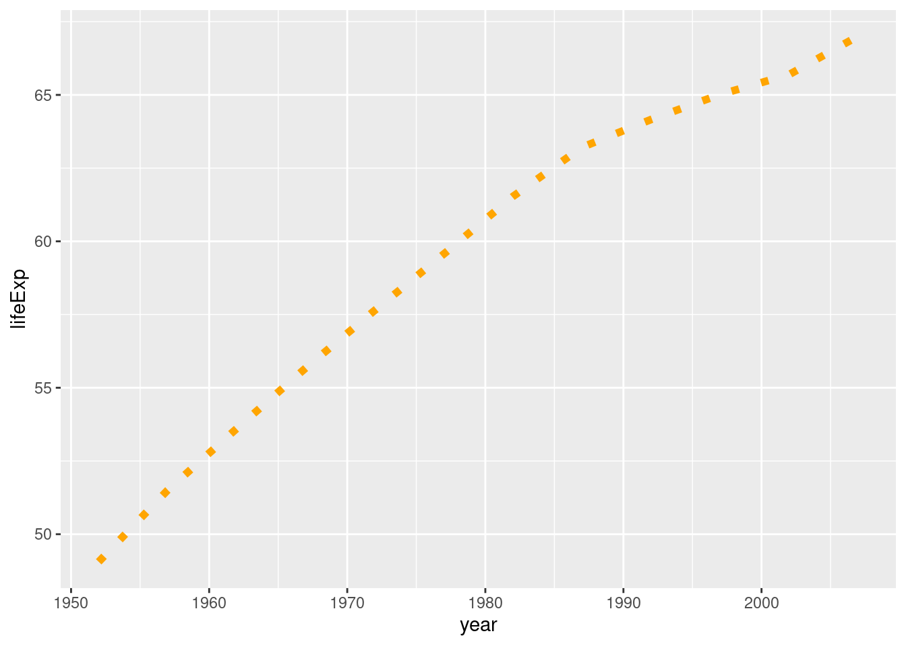
Zmień kolor linii na zielony, typ: linia kreskowa, grubość: 3
8.3 Modyfikacjia wykresu względem wartości zmiennej
Wykresy mogą być modyfikowane na podstawie wartości zmiennej. W tym celu można posłużyć się atrybutami:
- kolor (color)
- kształt (shape)
- wielkość (size)
ggplot(data=dane2007, aes(x=gdpPercap, y=lifeExp, shape = continent)) +
geom_point()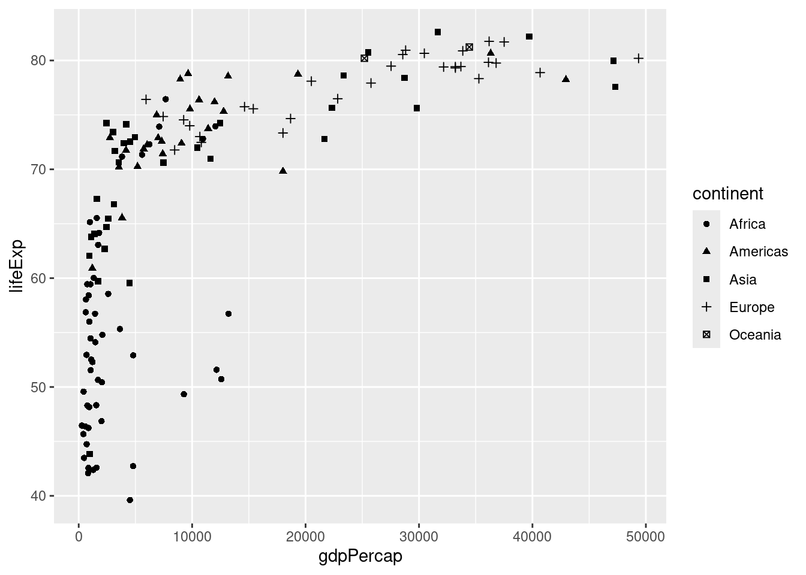
ggplot(data=dane2007, aes(x=gdpPercap, y=lifeExp, color = continent)) +
geom_point()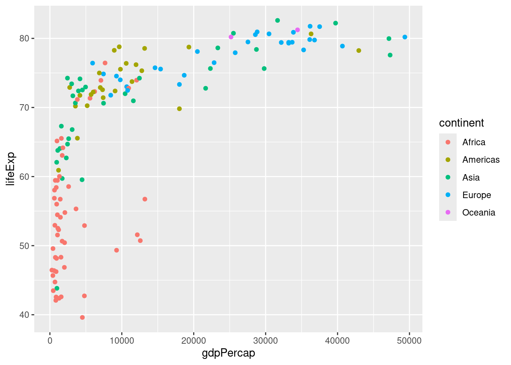
ggplot(data=dane2007, aes(x=gdpPercap, y=lifeExp, color = pop)) +
geom_point()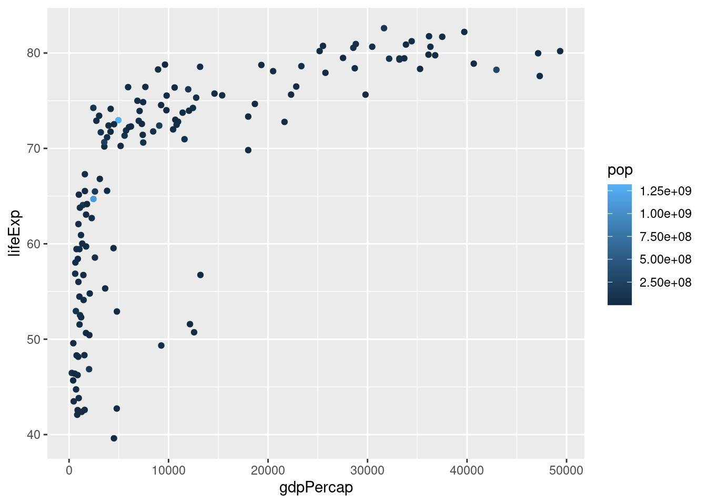
ggplot(data=dane2007, aes(x=gdpPercap, y=lifeExp, size = pop)) + geom_point()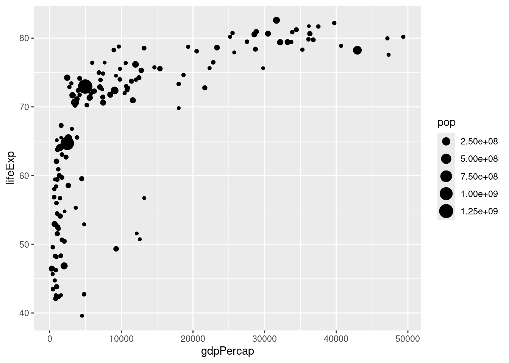
8.4 Tytuł wykresu
Tytuł wykresu można dodać używając ggtitle lub argumentu title wewnątrz labs
ggplot(data=dane2007, aes(x=gdpPercap, y=lifeExp)) +
geom_point() +
labs(x = "PKB na osobę (USD)",
y = "Oczekiwana dalsza długość trwania życia") +
ggtitle("Zależność między oczekiwaną długością trwania życia, a PKB w 2007 roku")ggplot(data=dane2007, aes(x=gdpPercap, y=lifeExp)) +
geom_point() +
labs(x = "PKB na osobę (USD)",
y = "Oczekiwana dalsza długość trwania życia",
title = "Zależność między oczekiwaną długością trwania życia, a PKB w 2007 roku")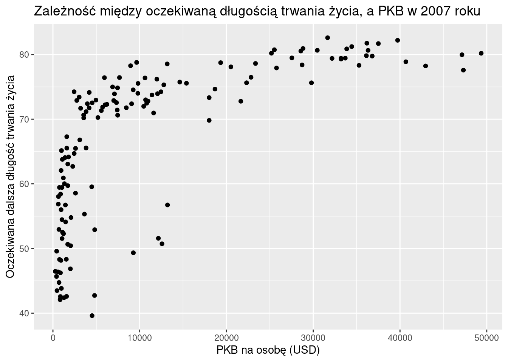
8.5 Formatowanie osi
8.5.1 Etykiety osi
Argument labs pozwala na dodanie do wykresów etykiet osi oraz tytułu.
ggplot(data=dane2007, aes(x=gdpPercap, y=lifeExp)) +
geom_point() +
labs(x = "PKB na osobę (USD)", y = "Oczekiwana dalsza długość trwania życia")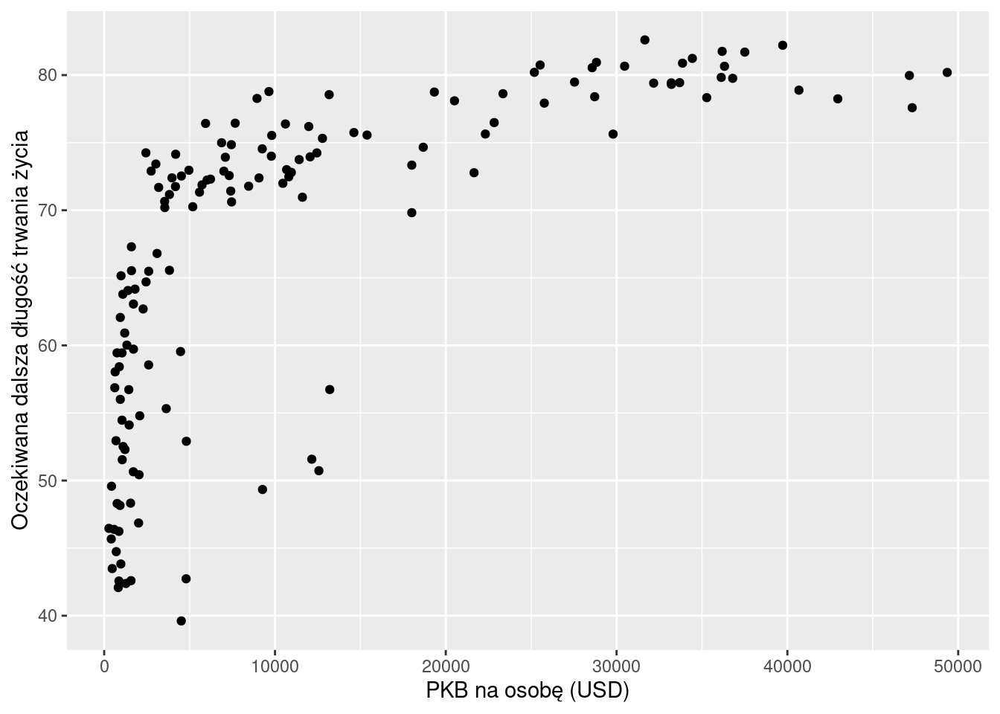
8.5.2 Zakres
ggplot(data=dane2007, aes(x=gdpPercap, y=lifeExp)) +
geom_point() +
labs(x = "PKB na osobę (USD)", y = "Oczekiwana dalsza długość trwania życia") +
lims(x = c(0, 10000))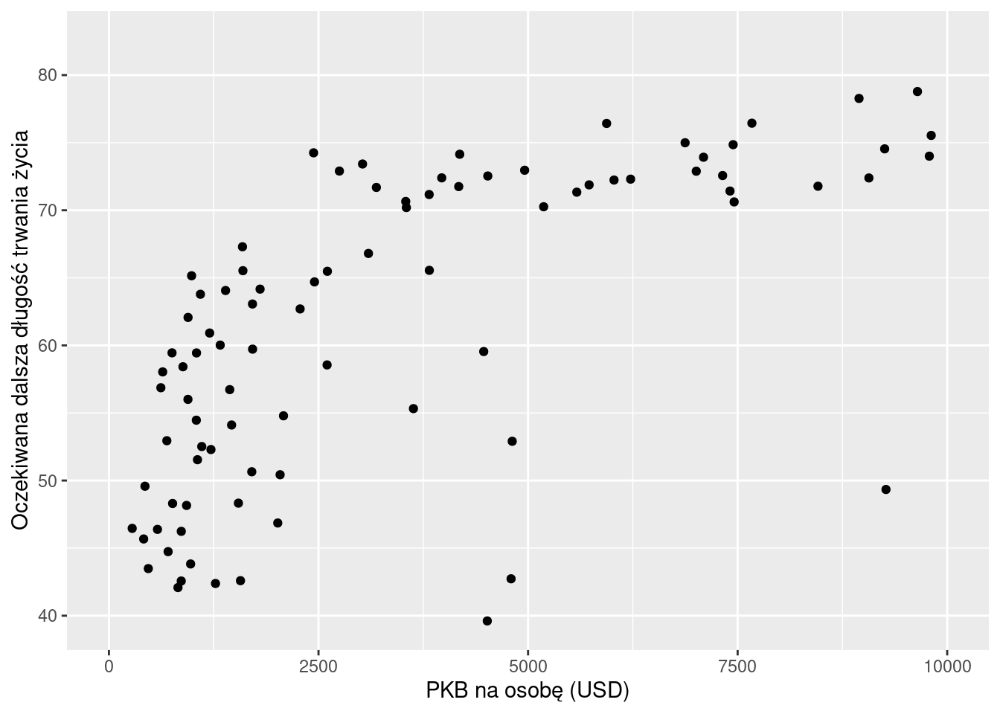
8.5.3 Skale
ggplot(data=dane2007, aes(x=gdpPercap, y=lifeExp)) +
geom_point() +
scale_x_continuous(name = "PKB na osobę w USD",
breaks = seq(0, 50000, 5000)) +
scale_y_continuous(name = "Oczekiwana długość trwania życia",
limits = c(0, 100),
breaks = seq(0, 100, 20))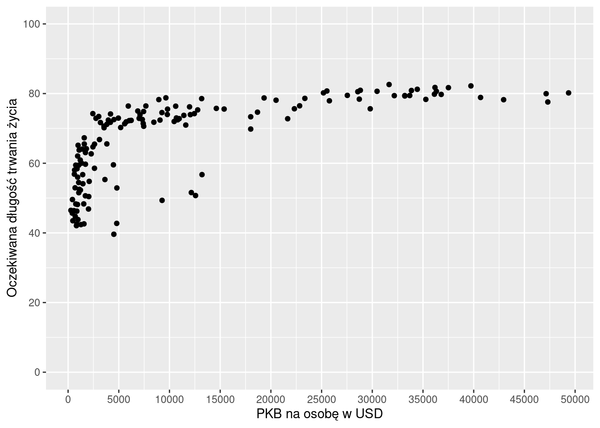
ggplot(data=dane2007, aes(x = continent, y = lifeExp)) +
geom_boxplot() +
labs(x = "Oczekiwana długość trwania życia") +
scale_x_discrete(name = "Kontynenty",
labels = c(
"Africa" = "Afryka",
"Americas" = "Ameryka Płn. i Płd.",
"Asia" = "Azja",
"Europe" = "Europa",
"Oceania" = "Australia i Oceania"))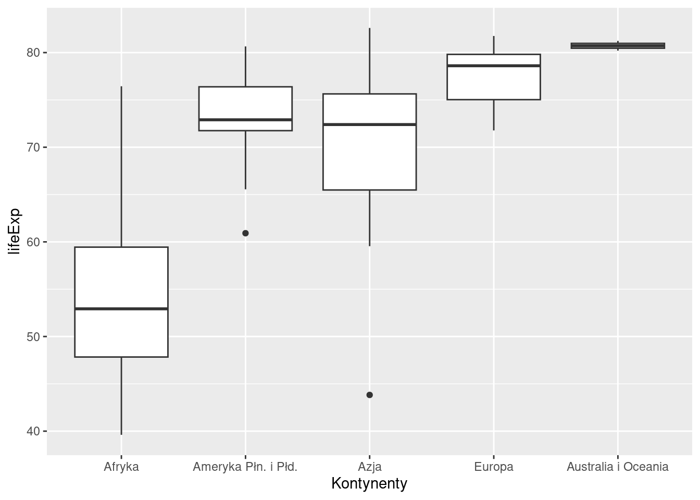
8.5.4 Skala logarytmiczna
ggplot(data = dane2007, aes(x = pop, y = lifeExp)) +
geom_point() +
labs(x = "Liczba ludności", y = "Oczekiwana długość trwania życia") +
scale_x_log10()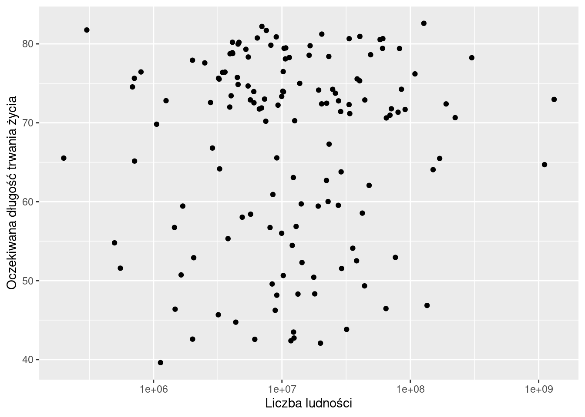
8.5.5 Odwrócenie osi
ggplot(data = dane2007, aes(x = continent)) +
geom_bar() +
coord_flip()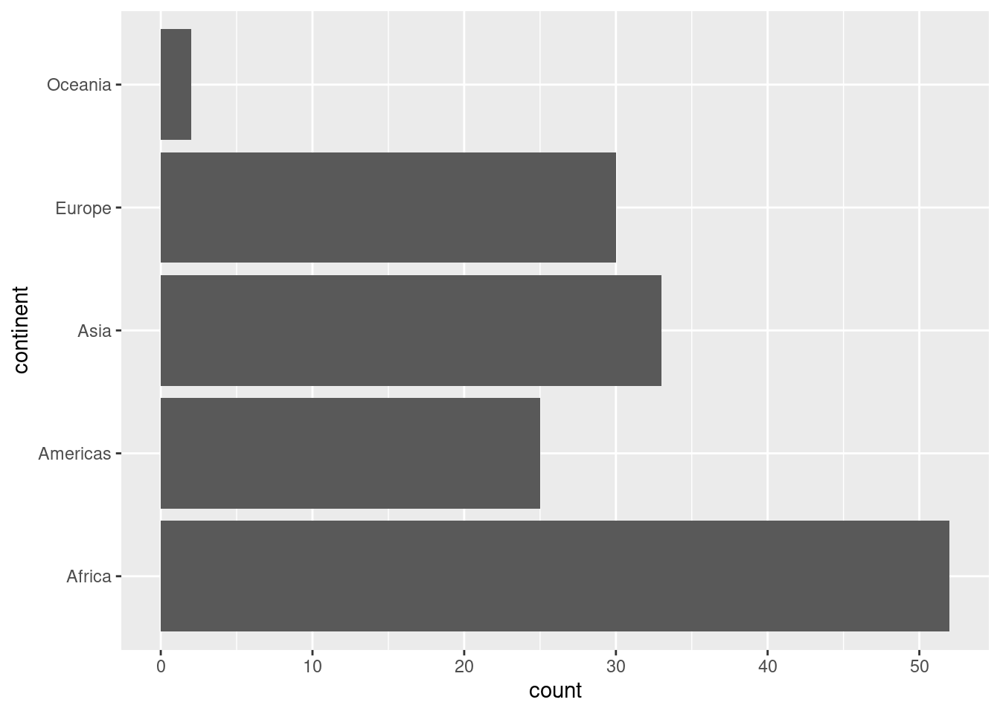
8.5.6 Sortowanie
library(forcats)
ggplot(data =dane2007, aes(x = fct_infreq(continent))) +
geom_bar()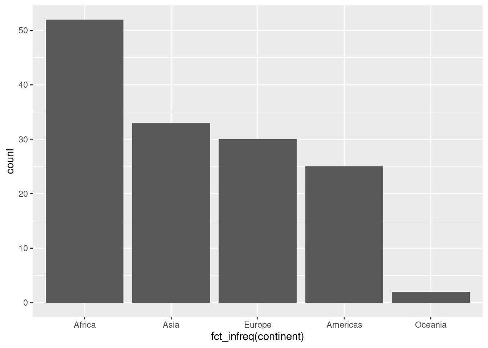
ggplot(data = dane2007, aes(x = fct_reorder(continent, lifeExp, median), y = lifeExp)) +
geom_boxplot()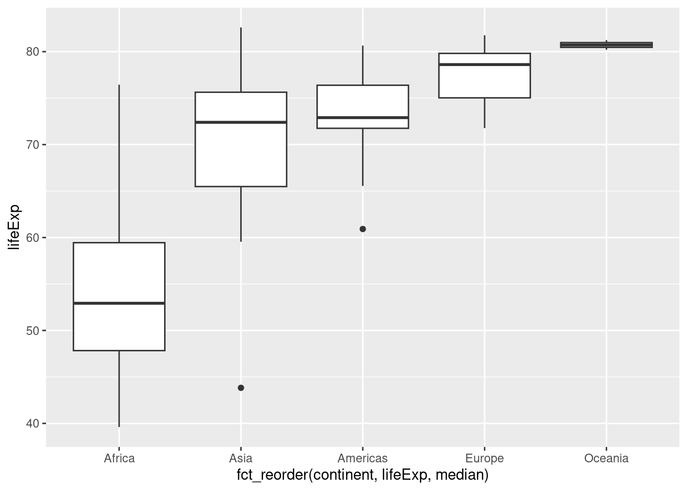
Dodaj tytuł oraz podpisy osi do powyższych wykresów.
8.6 Skale kolorystyczne
8.6.1 Skale kolorystyczne dla zmiennej jakościowej
Więcej: https://sjspielman.github.io/introverse/articles/color_fill_scales.html
scale_color_manualorazscale_fill_manualpozwala na samodzielne zdefiniowanie kolorów. Można także przypisać wektor z nazwami kategorii - wtedy kolor zostanie przypisany do danej kategorii.
ggplot(data=dane2007, aes(x=gdpPercap, y=lifeExp, color = continent)) +
geom_point() +
labs(x = "PKB na osobę (USD)", y = "Oczekiwana dalsza długość trwania życia") +
scale_color_manual(values = c("orange", "darkgreen", "lightgreen","blue", "purple"))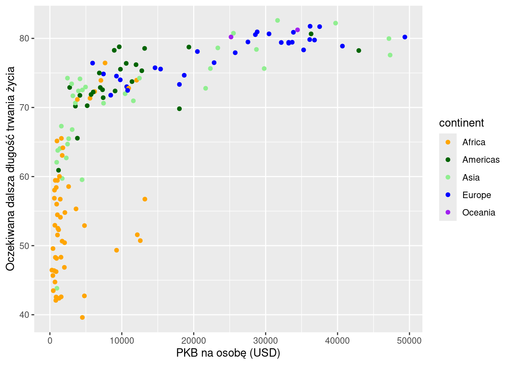
ggplot(data=dane2007, aes(x=gdpPercap, y=lifeExp, color = continent)) +
geom_point() +
labs(x = "PKB na osobę (USD)", y = "Oczekiwana dalsza długość trwania życia") +
scale_color_manual(values = c("Africa" = "orange",
"Americas" = "red",
"Asia" = "blue",
"Europe" = "purple",
"Oceania" = "green"))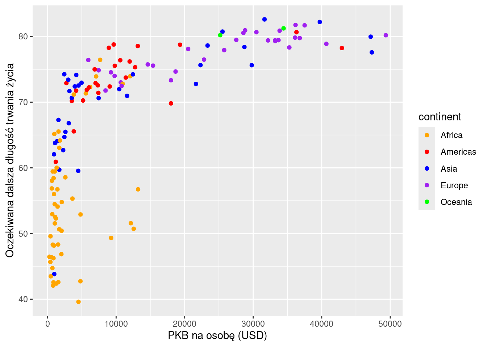
ggplot(data=dane2007, aes(x = continent, y = lifeExp, fill = continent)) +
geom_boxplot() +
labs(x = "Oczekiwana długość trwania życia") +
scale_fill_manual(values = c("blue", "orange", "magenta", "yellow", "green"))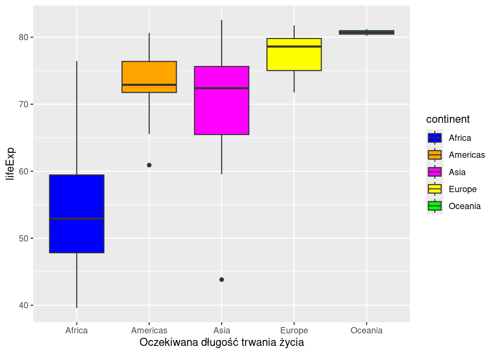
scale_color_brewerorazscale_fill_brewerz pakietuRColorBrewerpozwala na zdefiniowanie jednej z palet dostarczanych przez pakierRColorBrewer. Dostępne palety w pakiecieRColorBrewer`.
RColorBrewer::display.brewer.all()library(RColorBrewer)
ggplot(data=dane2007, aes(x=gdpPercap, y=lifeExp, color = continent)) +
geom_point() +
labs(x = "PKB na osobę (USD)", y = "Oczekiwana dalsza długość trwania życia") +
scale_color_brewer(palette = "Set1")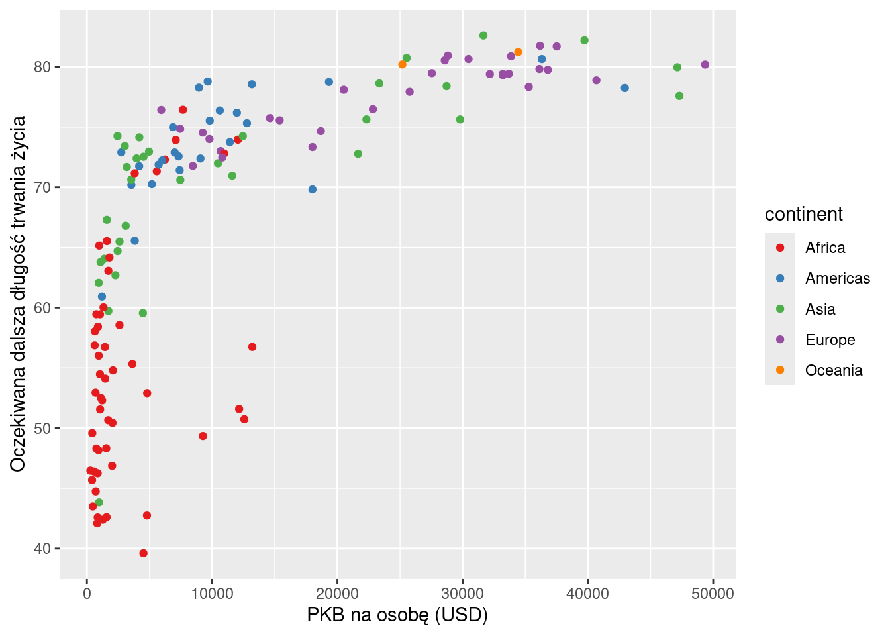
ggplot(data=dane2007, aes(x = continent, y = lifeExp, fill = continent)) +
geom_boxplot() +
labs(x = "Oczekiwana długość trwania życia") +
scale_fill_brewer(palette = "Set1")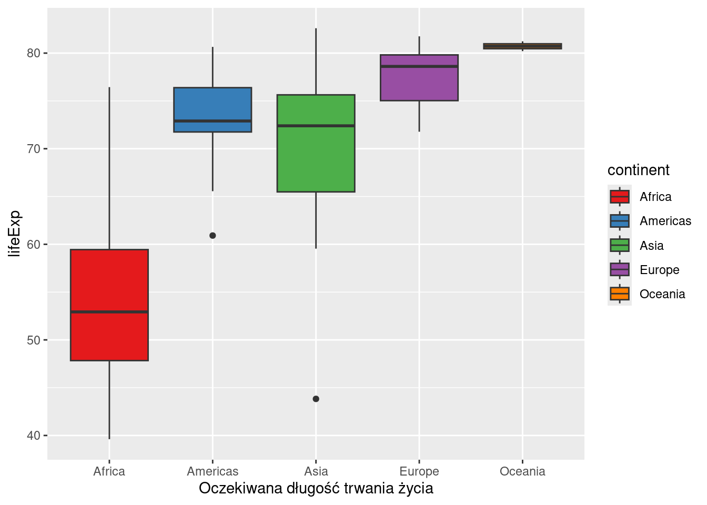
ggplot(data=dane2007, aes(x = continent, y = lifeExp, fill = continent)) +
geom_boxplot() +
labs(x = "Oczekiwana długość trwania życia") +
scale_fill_brewer(palette = "YlGn", direction = -1)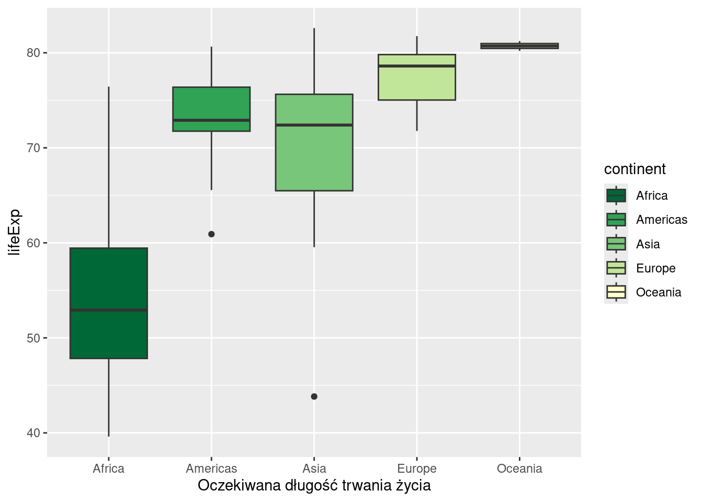
scale_color_discrete_qualitativeorazscale_fill_discrete_qualitativez pakietucolorspace(https://colorspace.r-forge.r-project.org/articles/ggplot2_color_scales.html)
library(colorspace)
ggplot(data = dane2007, aes(x = gdpPercap, y = lifeExp, color = continent)) +
geom_point() +
scale_color_discrete_qualitative(palette = "Dynamic")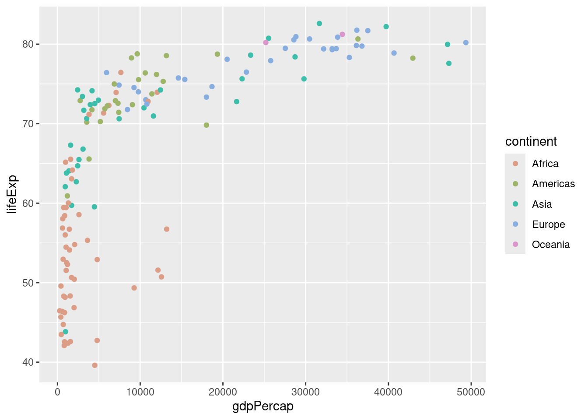
ggplot(data=dane2007, aes(x = continent, y = lifeExp, fill = continent)) +
geom_boxplot() +
labs(x = "Oczekiwana długość trwania życia") +
scale_fill_discrete_qualitative(palette = "Harmonic")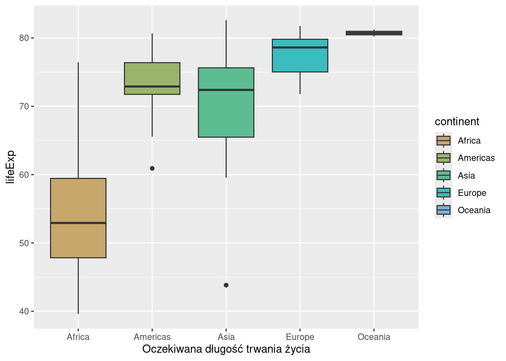
Wykonaj wykres pudełkowy dla zmiennej gdpPercap względem lat. Pokoloruj pudełka, podpisz osie oraz dodaj tytuł do wykresu.
8.6.2 Skale kolorystyczne dla zmiennej ilościowej
scale_colour_gradient
ggplot(data=dane2007, aes(x=gdpPercap, y=lifeExp, color = pop)) +
geom_point() +
labs(x = "PKB na osobę (USD)", y = "Oczekiwana dalsza długość trwania życia", color = "Kontynent") +
scale_colour_gradient(low = "orange", high = "brown")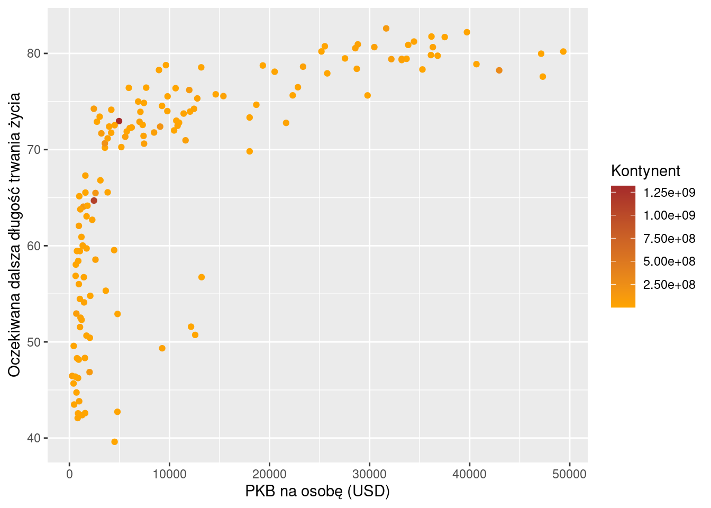
scale_color_continuous_sequentialz pakietucolorspace
ggplot(data=dane2007, aes(x=gdpPercap, y=lifeExp, color = pop)) +
geom_point() +
labs(x = "PKB na osobę (USD)", y = "Oczekiwana dalsza długość trwania życia") +
scale_color_continuous_sequential(palette = "YlOrRd")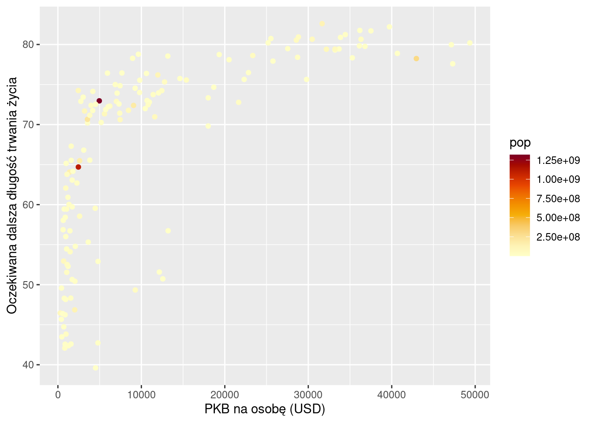
ggplot(data =dane2007, aes(x = gdpPercap, y = lifeExp, color = pop)) +
geom_point() +
labs(x = "PKB na osobę (USD)", y = "Oczekiwana dalsza długość trwania życia", color = "Liczba ludności") +
scale_color_continuous_sequential(trans = "log10", labels = scales::label_comma(), palette = "YlOrRd")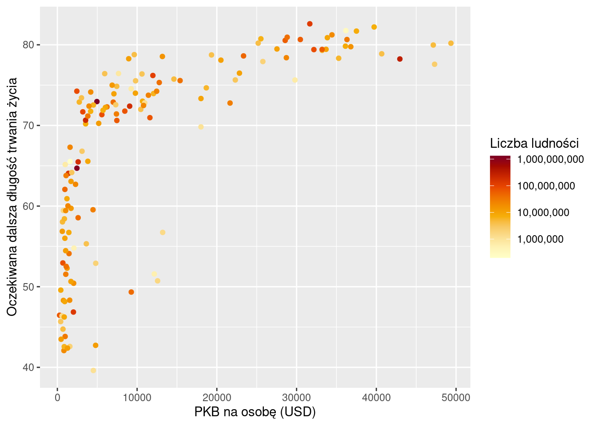
Wykonaj wykres ilustrujący zależność między PKB na osobę, a długością trwania życia. Pokoloruj punkty względem zmienej pop. Użyj dowolnej palety.
8.7 Tekst na wykresach
ggplot(data = dane2007, aes(x = gdpPercap, y = lifeExp, color = continent)) +
geom_point() +
geom_text(aes(label = country), check_overlap = TRUE)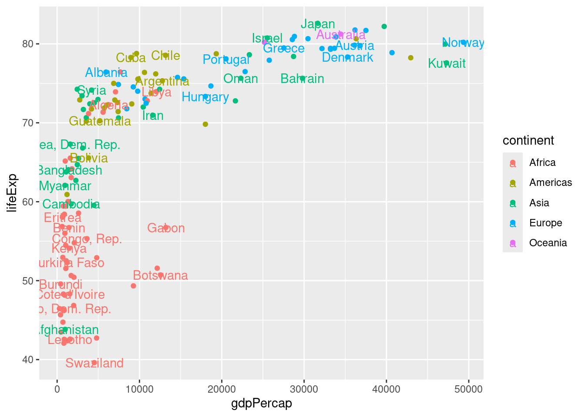
library(ggrepel)
ggplot(data = dane2007, aes(x = gdpPercap, y = lifeExp, color = continent)) +
geom_point() +
geom_text_repel(aes(label = country), max.overlaps = 3)Warning: ggrepel: 138 unlabeled data points (too many overlaps). Consider
increasing max.overlaps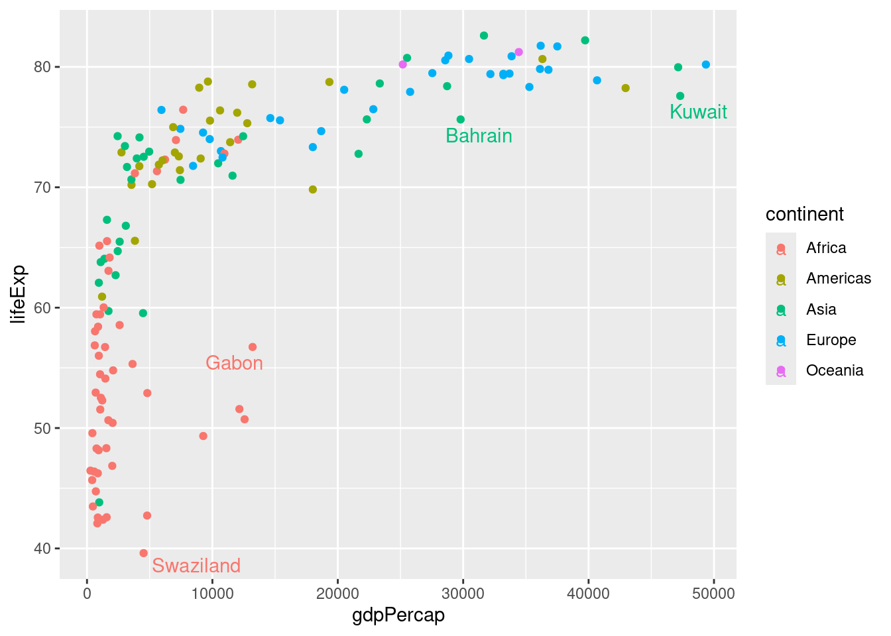
8.8 Motywy
Motywy (ang. theme) pozwalają na modyfikację i dostosowanie komponentów wykresów, takich jak tytuł, etykiety, tło, wielkość czcionki, położenie legendy itd. Istnieją wbudowane rozwiązania, np. theme_bw(), theme_classic(), theme_light(), theme_minimal(). Można także użyć funkcji theme() i dowolnie zmodyfikować każdy element.
ggplot(data=dane2007, aes(x=gdpPercap, y=lifeExp, color = continent)) +
geom_point() +
labs(x = "PKB na osobę w USD", y = "Oczekiwana długość trwania życia",
title = "Zależność między oczekiwaną długością trwania życia\na PKB na osobę w 2007 roku") +
theme_bw()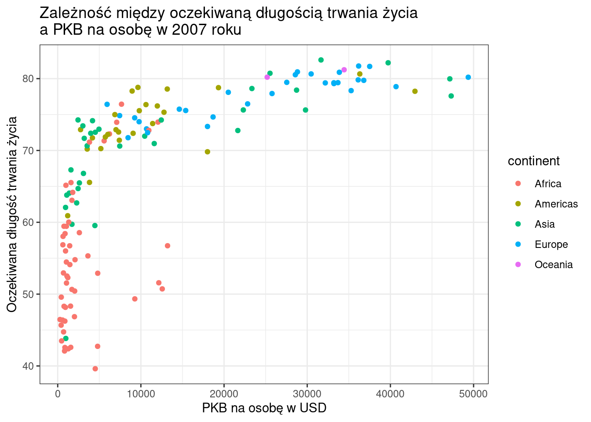
ggplot(data=dane2007, aes(x=gdpPercap, y=lifeExp, color = continent)) +
geom_point() +
labs(x = "PKB na osobę w USD", y = "Oczekiwana długość trwania życia", labs = "Kontynent",
title = "Zależność między oczekiwaną długością trwania życia\na PKB na osobę w 2007 roku") +
scale_color_brewer(name = "Kontynent", palette = "Set1",
labels = c("Africa" = "Afryka", "Americas" = "Ameryka N/S", "Asia" = "Azja", "Europe" = "Europa", "Oceania" = "Australia i Oceania")) +
theme_bw() +
theme(base_size = 13,
legend.position = "bottom",
legend.title = element_text(face = "bold"))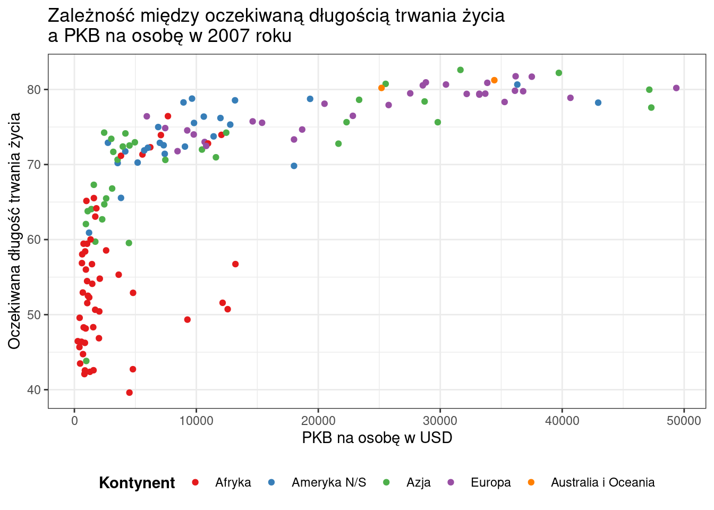